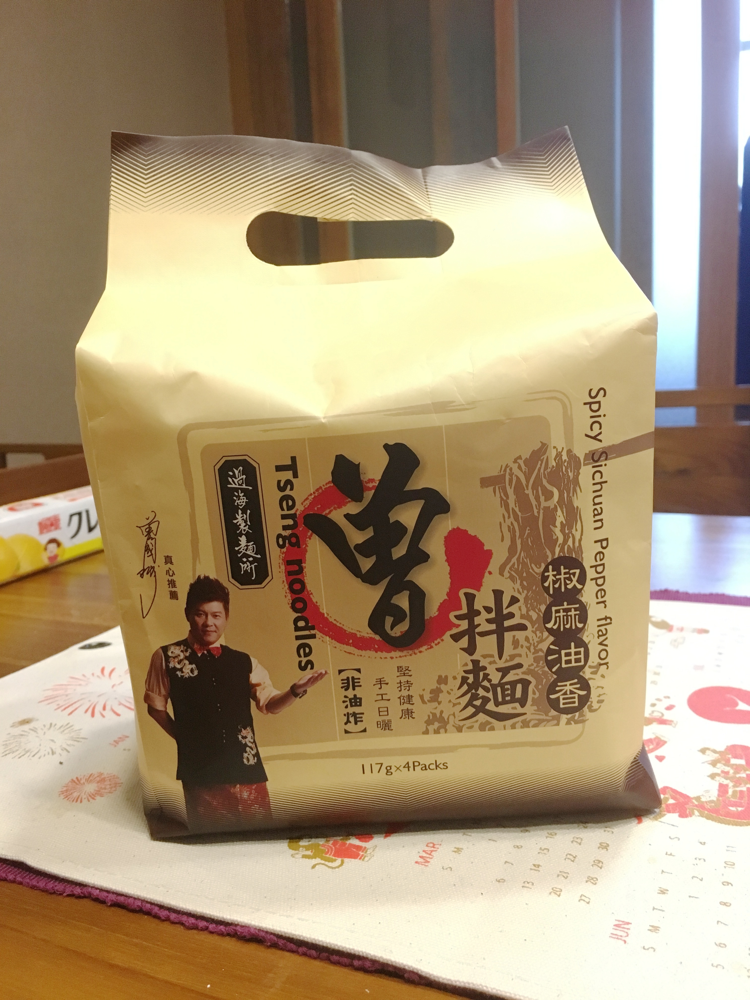
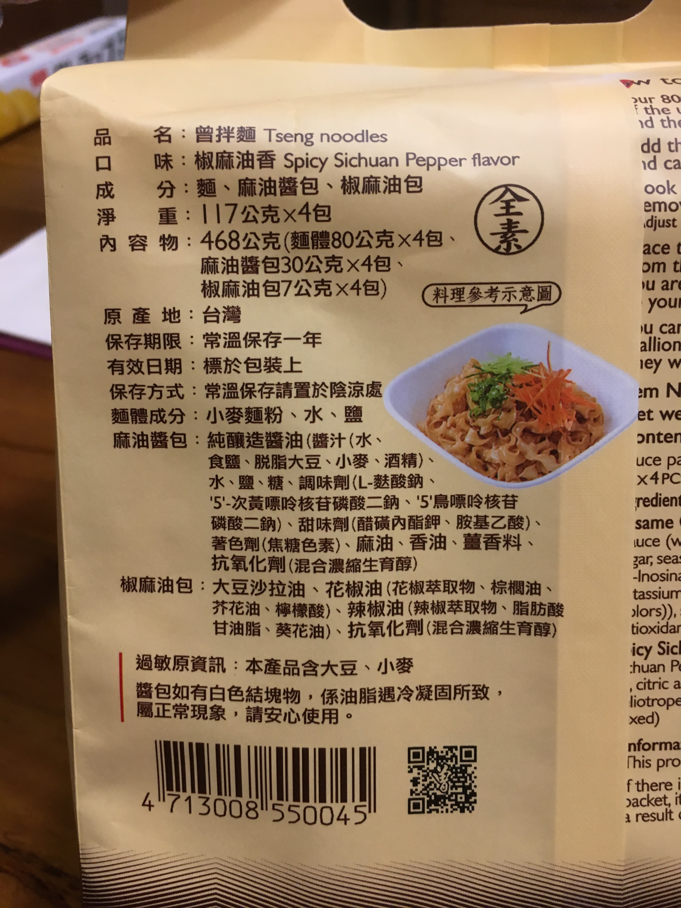
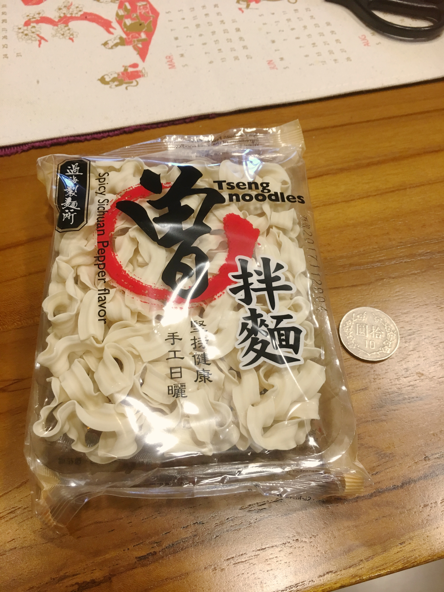
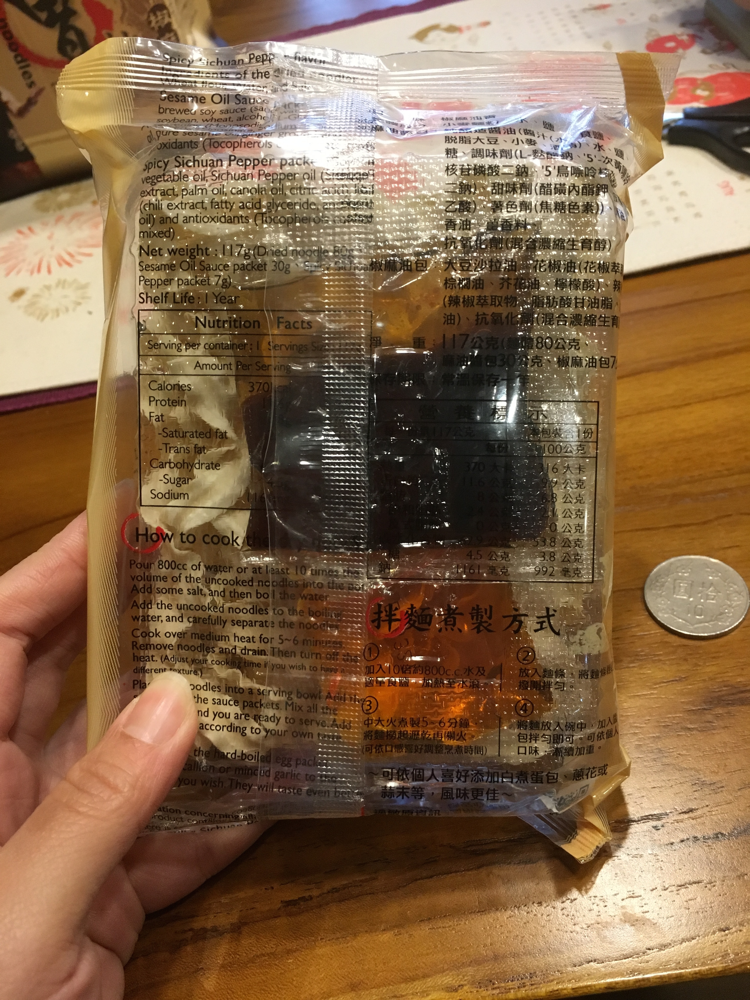
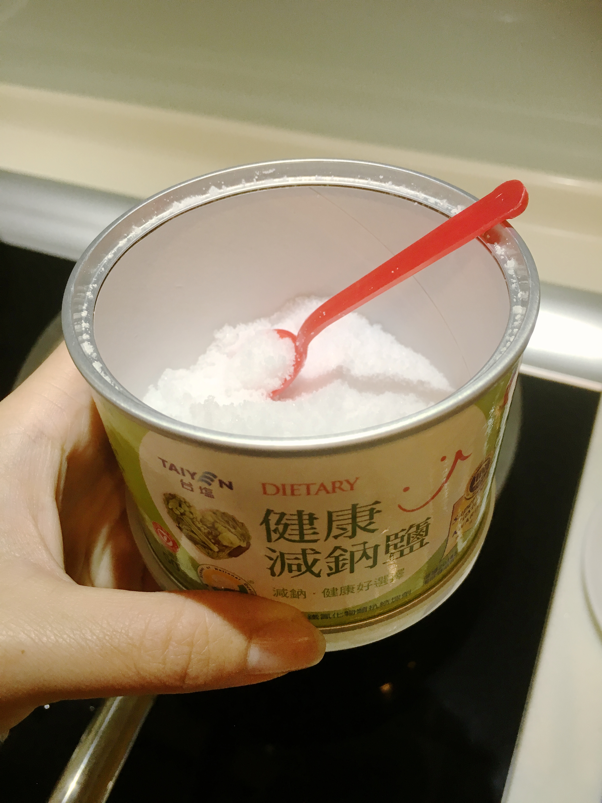
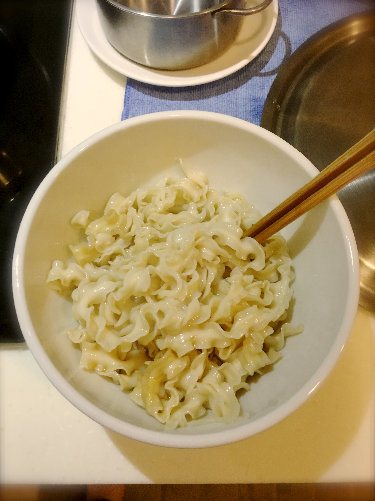
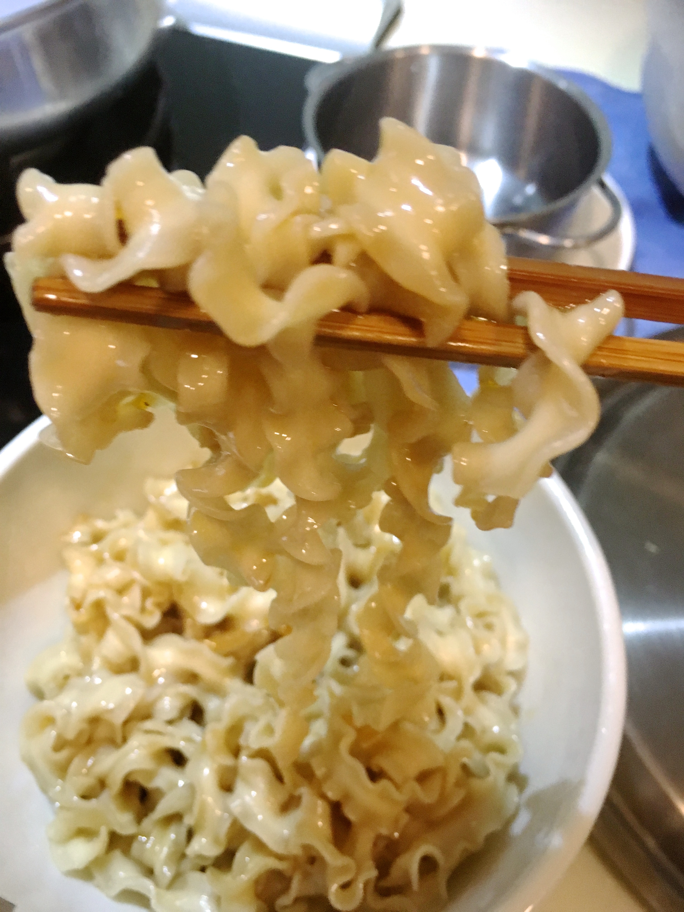
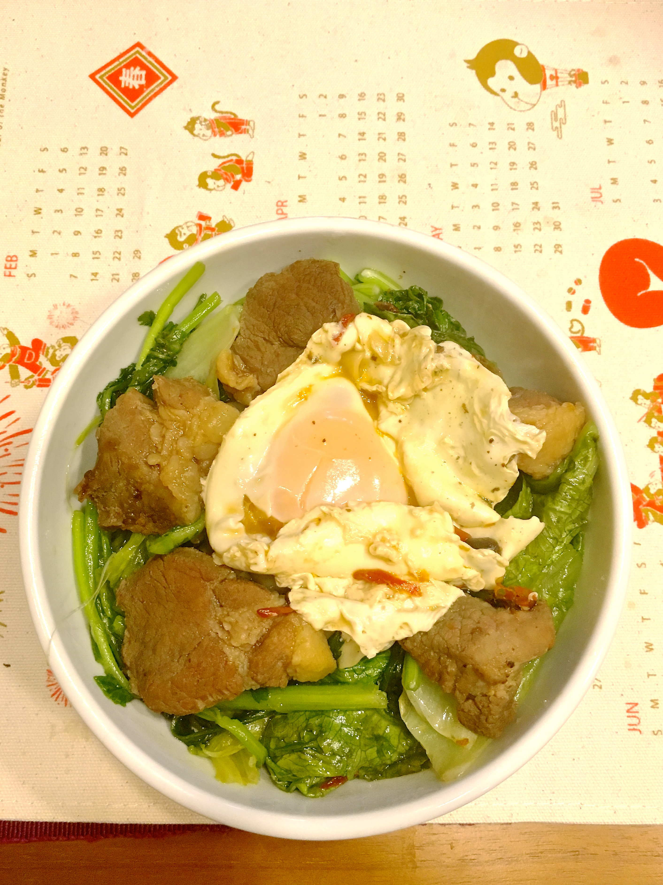

曾拌麵是啥？
有點像阿舍乾麵，是“乾麵”非”泡麵“
麵體是非油炸的寬版麵條

五字訣圖片來源：好吃宅配網

實品長這樣,我是買椒麻油香這個口味,素食者也可以吃,附油包無粉包,10元是我的不是它附的
為何要買曾拌麵？
我完全就是沖著曾國城而買的阿ＸＤ
各大綜藝節目介紹藝人朋友讚不絕口
特選厚芯波浪麵條，Q彈耐久煮有咬勁
傳統關廟麵改良工法，日曬風乾，無添加防腐劑
曾國城親自監造
怎麼煮？
步驟二
加入一些鹽巴至滾水中

這是讓麵QQ的關鍵
步驟四
6分鐘後麵熟撈起,加入醬包

 黑色醬包是麻油,紅色醬包是椒麻,怕辣的話紅色醬包加少一點
黑色醬包是麻油,紅色醬包是椒麻,怕辣的話紅色醬包加少一點
步驟五
拌完,開動,阿～～


覺得沒料很單調,可自行加菜,結果一不小心就被我塞滿...
食後-各項評分
| 口感 |
***** |
| 味道 |
***** |
| 份量 |
*** |
| 料理簡易度 |
**** |
| 價錢 |
** |
整體吃下去的感覺就是 Q彈、麻、香、辣 好吃！
份量普普,料理難度低,但也不是像泡麵這麼簡單
唯一要考量的就是它價格跟其他乾拌麵相比偏貴,我是去家x福買的,一袋＄225內含四塊麵,但是若是上網訂的話,最便宜可降至每袋＄155喲～快往下滑看哪裡可以買便宜
去哪買？多少＄？
買袋＄225~$155
點擊各家logo圖片即可跳出連結


google曾拌麵